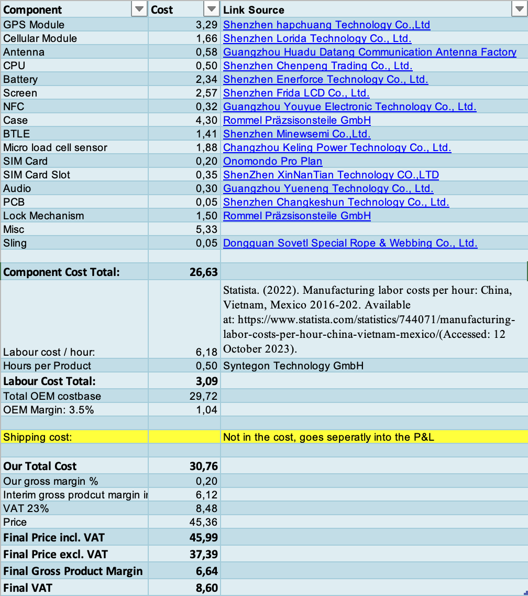
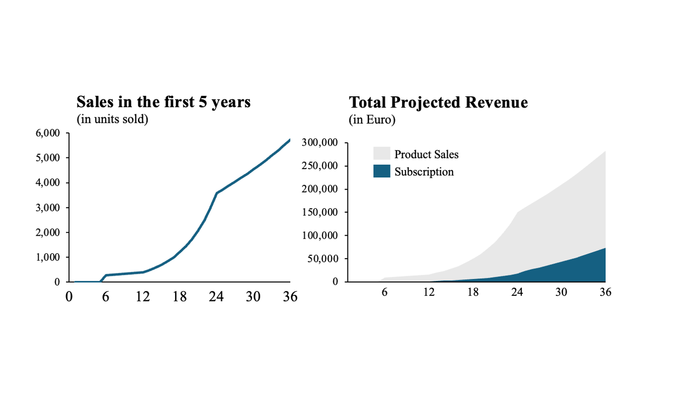
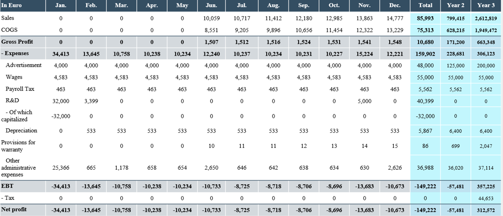
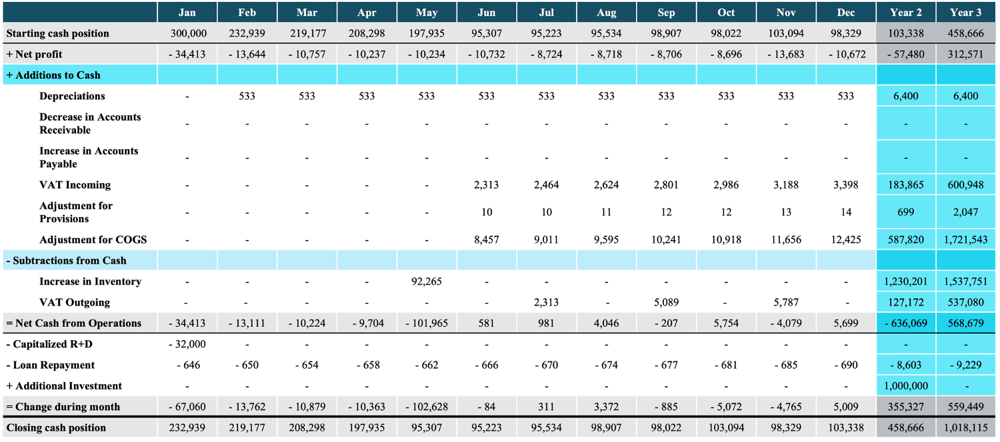
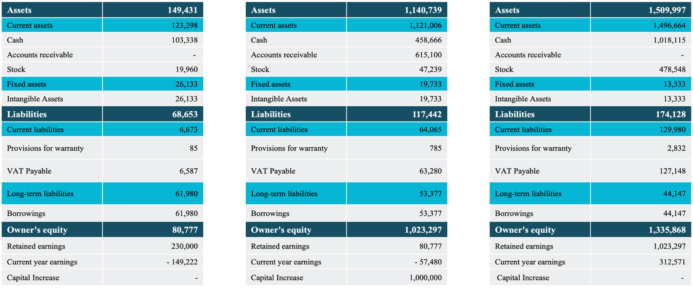

Financial Projections in Excel
The aim of this project was to create a financial forecast for Amtagio. A fictional start-up set to start operation in 2025. The core business of this company is a travel tag and a subscription to use this tag. The Excel file we used for this financial contains nine work sheets with the three financial statements and the assumptions and costs used for the projections.
We started by creating a comprehensive cost calculation for the travel tag. This contains all the components and all other aspects that contribute to our cost of goods for the travel tag.
We used this as a basis to create a sales forecast. The growth numbers we assumed where previously researched in another document. All assumptions where gathered in the assumptions work sheet to create a single place to link to and to look up all our assumptions. With this we created a sales forecast for the first 5 years of trading. The forecast was made on a monthly basis.
Based on this forecast we than created the profit and loss statement, the cashflow statement and the balance sheets for the first three years.
  This financial projections allowed us to use concrete numbers for the module and where used in our businessplan and our pitch. For me, as the COO of Amtagio, it was important to have a comprehensive model of our financials to make sure our operations are financially sound. It also helped us to seek out more efficiency in our business model and optimise processes in the first three years.